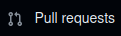
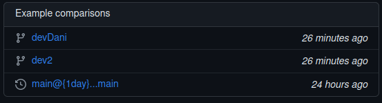
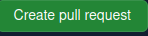
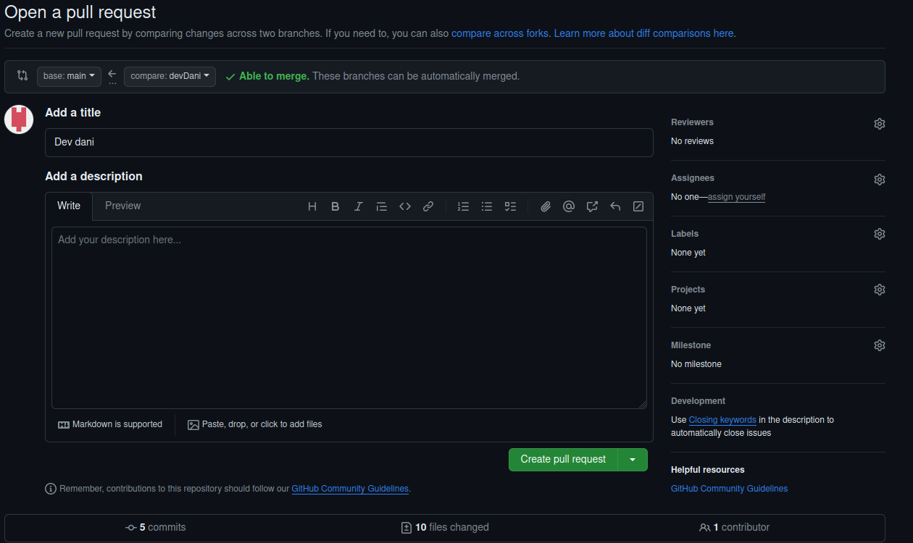
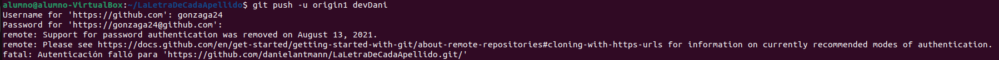
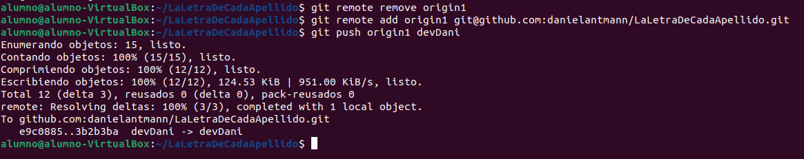

¿Qué es un Pull Request? ¿Cómo podriamos realizar una? ¿Qué utilidad tiene?
Una Pull Request es una función que nos permite pedir aprobación al equipo sobre un cambio antes de juntarlo con la rama principal.
Para poder utilizar un Pull Request debemos acceder a nuestro repositorio remoto en GitHub y entrar en la pestaña de Pull Request.
Le damos a new, seleccionamos la rama devDani para comparar los cambios con la rama principal.
Creamos la Pull Request. Nos pedira un titulo para la solicitud y algo de descripción. Una vez la creamos nos queda esperar a que sea aceptada y unir la rama devDani con la rama principal.
 Su utilidad se resume en poder revisar y tener un control sobre los cambios del equipo en el desarrollo del proyecto.
Ejemplos de conflitos que han surgido durante la resolución del problema.
-Fallo al hacer push al repositorio remoto.
Para remediar el error nos hizo falta añadir un origin con la clave ssh del repositorio remoto.
Al intentar hacer un push nos aparecia lo siguiente:
Despues de remediar el problema nos aparece lo siguiente:
Lo que se hace en la imagen es eliminar el origin1 que estaba con una clave incorrecta y añadir de nuevo origin1 con la clave ssh del repositorio remoto.